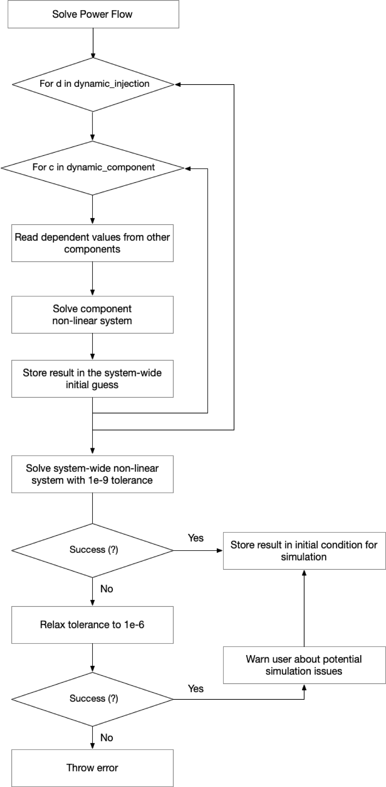
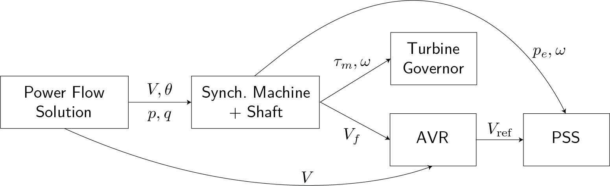
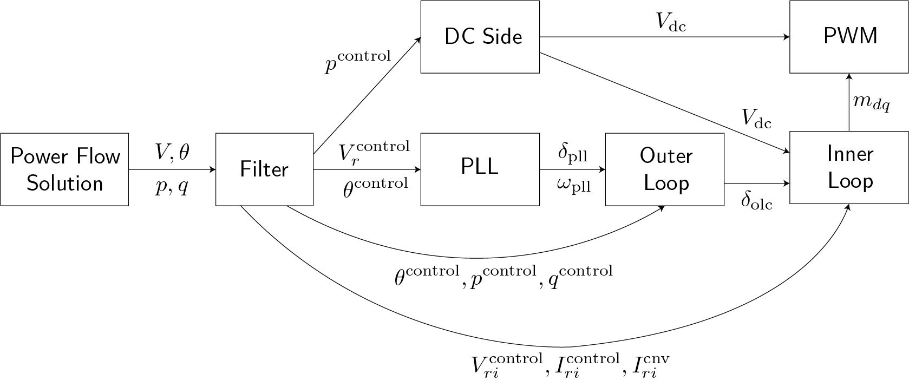

Initialization Routine
Dynamic Simulations require a reasonable initial condition for the system model. In most analysis, power systems models are initialized at a stable equilibrium, which implies that:
\[\begin{align} 0 = F(x, u, \eta) \end{align}\]
Finding the solution of a large non-linear system is challenging and requires a reasonable initial guess. In classical power systems literature, the routine to find equilibrium points for the dynamic injection devices' components is well known and used in free and commercial software (see Power System Modelling and Scripting page 224). However, in the case of converter interface dynamic injection models, such routines are not documented.
Initializing the system also requires finding valid set-points for the devices in the system. For instance, finding the reference voltage in an AVR to match the voltage magnitude resulting from the power flow solution. PowerSimulationsDynamics.jl prioritizes mathching the dynamic components control references to match the power flow results.
Finally, the initialization must instantiate not only the values of the states but also the inner vars. PowerSimulationsDynamics.jl handles all this initializations by default.
Initialization interface
By default PowerSimulationsDynamics.jl initializes the system following the steps described below. it is possible to provide an initial guess for the initial conditions to speed up the initialization process.
Simulation(
ResidualModel,
sys,
pwd(),
(0.0, 20.0);
initial_conditions = x0_init,
)It is also possible to initialize the simulation using a flat start (V_mag = 1.0, V_angle = 0.0 and x0 = zeros) using initialize_simulation = false. However, for medium or large system this is unlikely to result in a valid initial condition for the simulation.
Simulation(
ResidualModel,
sys,
pwd(),
(0.0, 20.0);
initialize_simulation = false,
)If you want to avoid PowerSimulationsDynamics.jl from finding an stable equilibrium automatically and provide the initial condition manually you can use the following flag combination.
Simulation(
ResidualModel,
sys,
pwd(),
(0.0, 20.0);
initialize_simulation = false,
initial_conditions = x0_init,
)<span style="color:red">WARNING!</span>: when the initialize_simulation is set to false, neither the device set points nor the inner vars are initialized. Use these keywords with care and make sure the values in the system components match the initial conditions provided.
System-wide initialization routine
The initialization routine starts from the solution of the power flow equations. For each dynamic injection device PowerSimulationsDynamics.jl finds the solution of the systems of non-linear equations for each dynamic component following the sequences described in the forthcoming sections.
Once each device is individually initialized, the system-wide initial guess is used to solve the system (1). In a first attempt at finding the solution, the tolerance is set to a stringent tolerance. If the non-linear solver is unable to get a solution, it might usually reflect small signal stability problems in the system. In a second attempt, the tolerances are relaxed. If the solver succeeds, the simulation continues, but the user is warned.
Initialization of the Synchronous Machines
The initialization of Synchronous Machines is standard in power systems and follows the scheme shown in the figure. Other internal variables are calculated recursively from the power flow solution for the node on which the dynamic device isconnected. (Adapted from Power System Modelling and Scripting Figure 9.2)

Initialization of the Inverters
Initializing the inverters follows the sequence shown in the figure and has been developed to be compatible with the implementation of custom dynamic components. Given that the process is less studied and standard than the one of the synchronous machine, this page contains more detailed documentation of the process.

- The first component to be initialized is the filter. Given that the filter is an RLC circuit connected to the grid, its currents and voltages need to match the results of the power flow. The initialization of the filter provides the values for the $P$ and $Q$ used in the outer control and the $V$ and $I$ needed in the inner controls.
- Based on the bus voltage in the system's reference frame $V_r$ and the bus angle $\theta$ the PLL's can be initialized to obtain the angle and frequency estimates needed by the outer control.
- The Outer Control calculates the internal angle $\delta_{olc}$ required by the inner control to estimate the voltage and current phase difference.
- The DC Source uses the power set-point consistent with the power outputs of the filter to initialize the $V_{dc}$ set-points. This value is used in the inner control.
- The inner control takes the phase angle $\delta_{olc}$ and the $V_{dc}$ to estimate the modulation values of the PWM converter.
Note: The initialization of an inverter through the proposed meta-model is actively under development and subject to change. This page will maintain the latest version of the sequence.